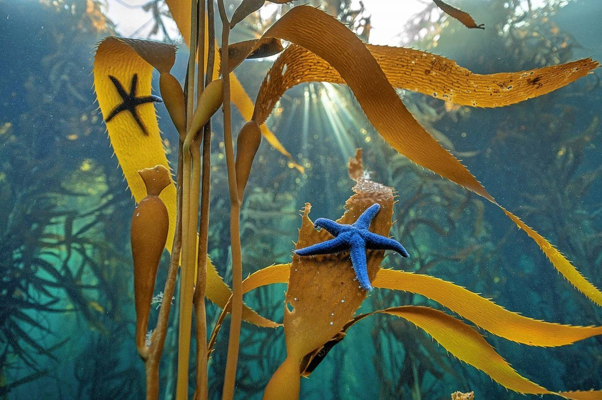
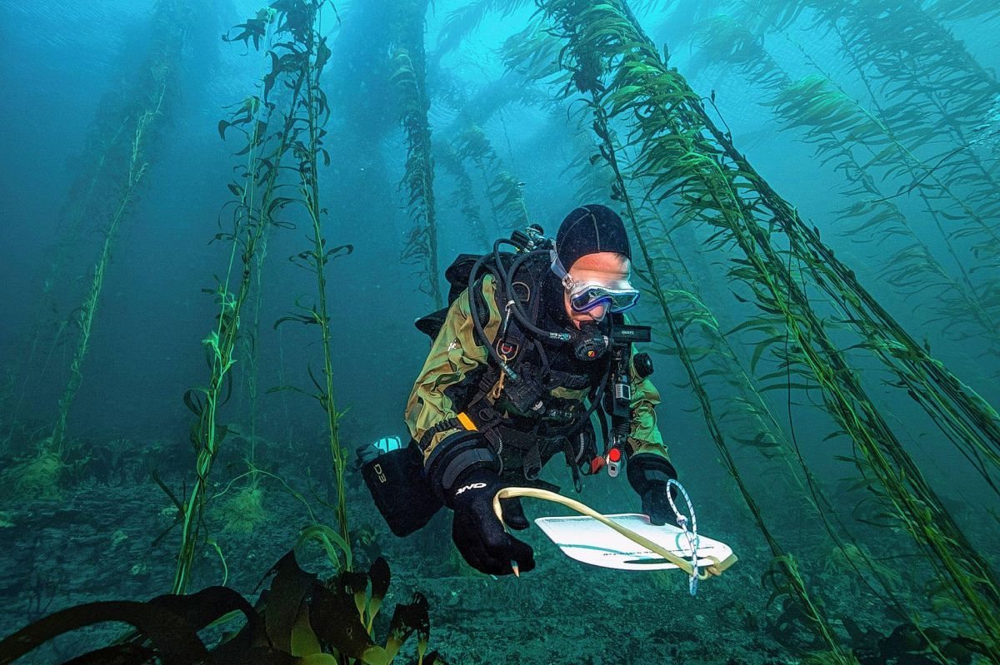
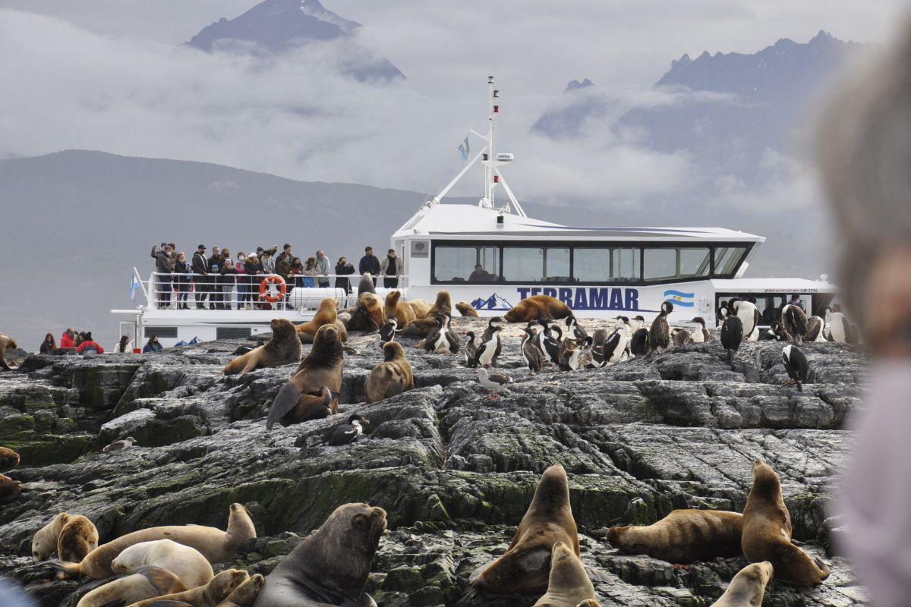

Nuestra Misión
Buscamos crear e implementar estrategias de conservación efectivas que protejan y restauren el océano y nuestra conexión con él
Leer más

Quiénes somos?
Somos una organización de conservación marina sin fines de lucro impulsada por un equipo de científicos, activistas, comunicadores y expertos que convergen para la protección y restauración del océano.
Leer más

Sumate al equipo!
Sé parte de este equipo maravilloso, para experimemtar aventuras saludables y de conexión con la fauna marina que nos rodea.
Leer más